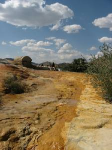

Picturing history: Soda Springs, Idaho
Located in Caribou County of southeastern Idaho, the little town of Soda Springs was an
unusual but welcome stop on the Oregon Trail. Travelers enjoyed bathing in the natural mineral
springs that bubble out of the earth there. The site became a landmark along the trail and a
first destination to travelers in general. This interpretive panel is near the site of Morristown,
Idaho, a settlement established by Col. Patrick Connor that now lies under the waters of a reservoir.
| Kenneth Mays. A state of Idaho interpretive panel near the town notes that Col. Patrick E. Connor
(from Fort Douglas, Utah) established a settlement called Morristown, and adjacent army post near the
mineral springs in 1863. In subsequent years, the population began to dwindle. In 1870, LDS Church
President Brigham Young established what is present-day Soda Springs just east of Connor’s location.
In the early 1870s, the Mormon settlers built a cabin to be a summer home for President Young at the
site he established. He set up the wide streets and square blocks of the settlement.
Continue reading article here